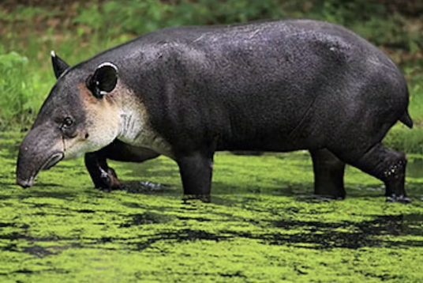
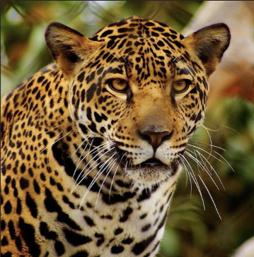
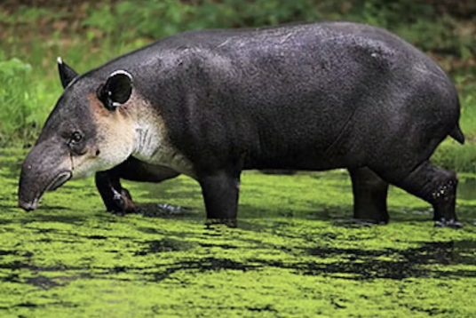
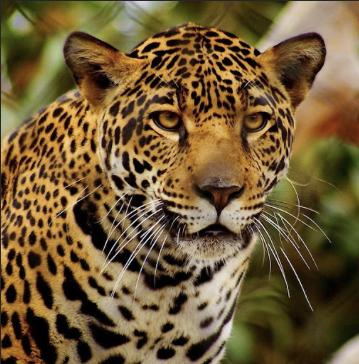

Wildlife Gallery
Explore the Life of Amuay
The Wildlife Gallery celebrates the incredible biodiversity of Amuay Wildlife Park - a sanctuary for hundreds of native Venezuelan species. From the souring scarlet libis to the stealthy jaguar, every corner of the park reveals a story of survival, beauty, and balance. Amuay's habitats include open savannahs, lush tropical wetlands, shaded forest trails, and peaceful marshes, each supporting its own community of remarkable creatures. Our Gallery showcases the park's most iconic residents, highlighting their behaviour, adaptations, and the importance of their protection.


 


